"Students should never worry about one's foundations, but have a sufficient amount of
aptitude and passion for one's chosen field of study, incorporating theoretical knowledge
and practical experience”
We at G. H. Patel College of Engineering and Technology, Vallabh Vidyanagar, a premier
engineering institute that has been nurturing young engineers since 1996, are organizing a
Students' Technical Awareness Conference under IEEE GCET Student Branch.
STAC 2013, the National Level Technical conference of G.H. Patel College of Engineering and Technology awaits the glory of all the technocrats participating and presenting their underlined technical skills, with their brilliant minds and technicality in hand, a spurge of ample number of students participates actively from all over the nation. On the other hand, we aim at inculcating young minds with such innovative thoughts and ideas, thus providing motivation and inspiration to them.
We aim at providing a vibrant platform for a wide cross section of working professionals to interact and exchange valuable ideas, and giving guidelines on technical research and developments. The highlights of conference are technical sessions and technological exhibitions. Highly accomplished and eminent speakers from various fields will share their expertise and their life changing experiences.
In the entire new platform STAC, With the noble motive and vision for learning and development of ones potential, various entrepreneurs will inspire students for numerous endeavors in their life.
The “Student Technical Awareness Conference” at GCET is an attempt to create a completely new horizon, to take this technical extravaganza to its zeniths and make an experience cherished forever.
STAC 2013 is not only technical event but also a “Societal Revolution”.
